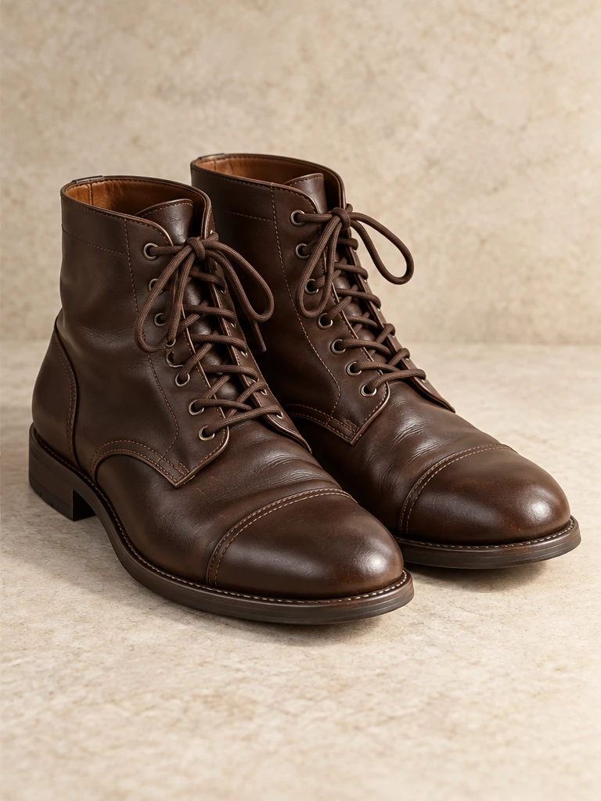
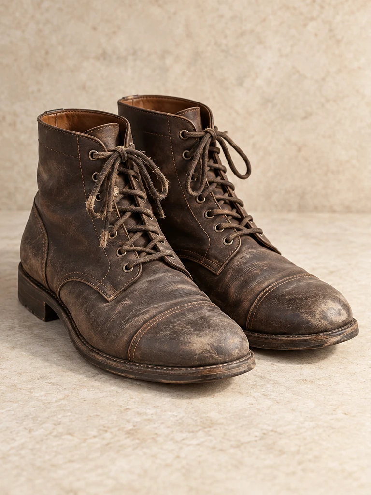

Любимые вещи.
Новая жизнь.
Ремонтируем обувь и одежду, восстанавливаем кожу и сумки. Помогаем вернуть любимым вещам аккуратный вид.
Подобрать восстановлениеВыберите вещь и опишите задачу.
Форма демонстрирует сценарий обращения.
Создано Михаилом Милосердовым


ДоПосле
Что нужно восстановить?
Выберите направление, чтобы подготовить обращение к мастеру.
Покажите вашу вещь
Выберите тип вещи и опишите задачу. Сайт подготовит текст обращения прямо в браузере. Это демонстрация без отправки заявки.
О демонстрации ↗